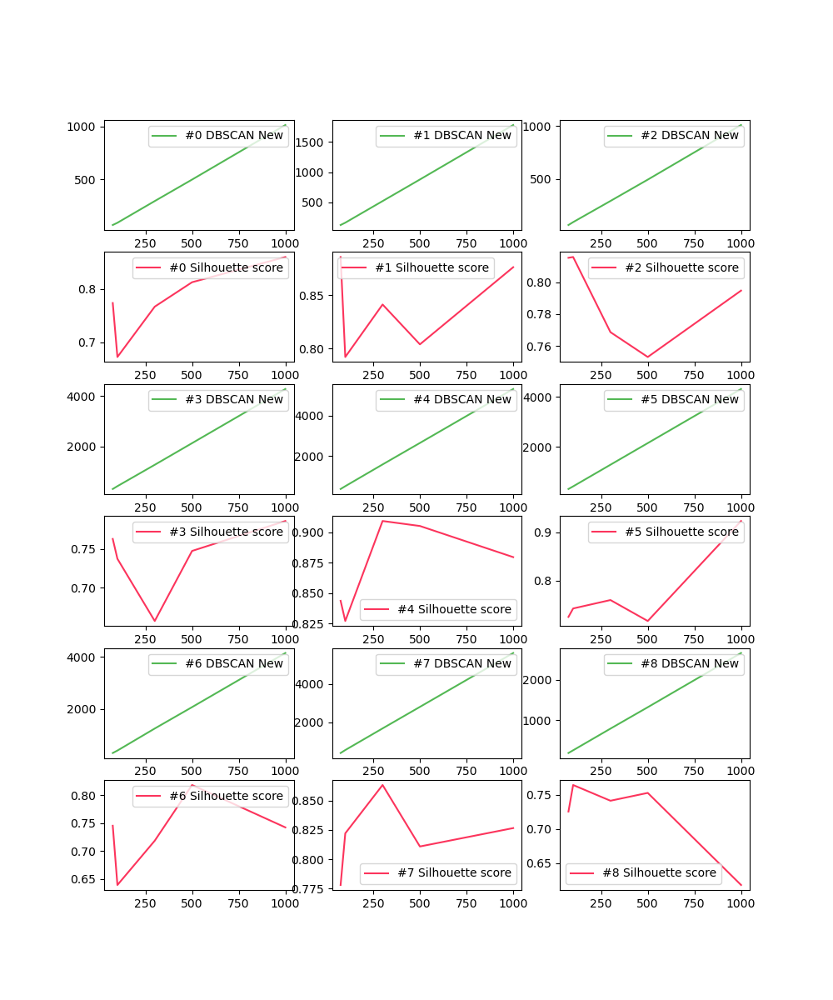
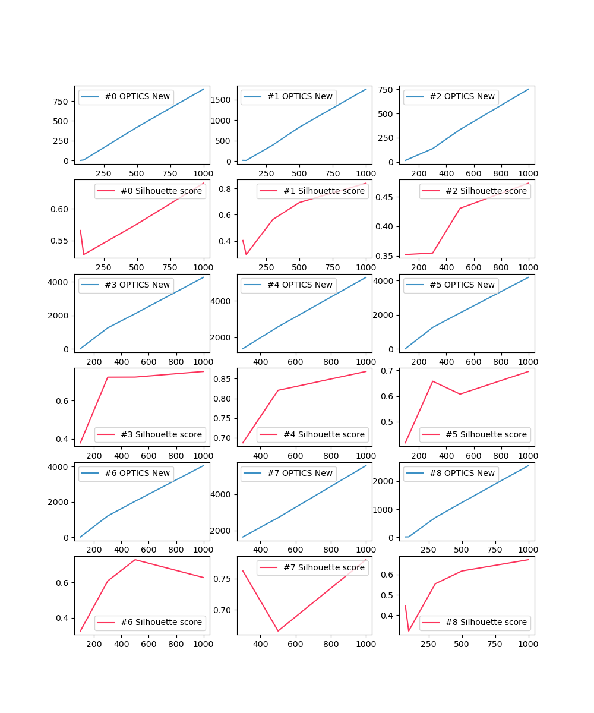
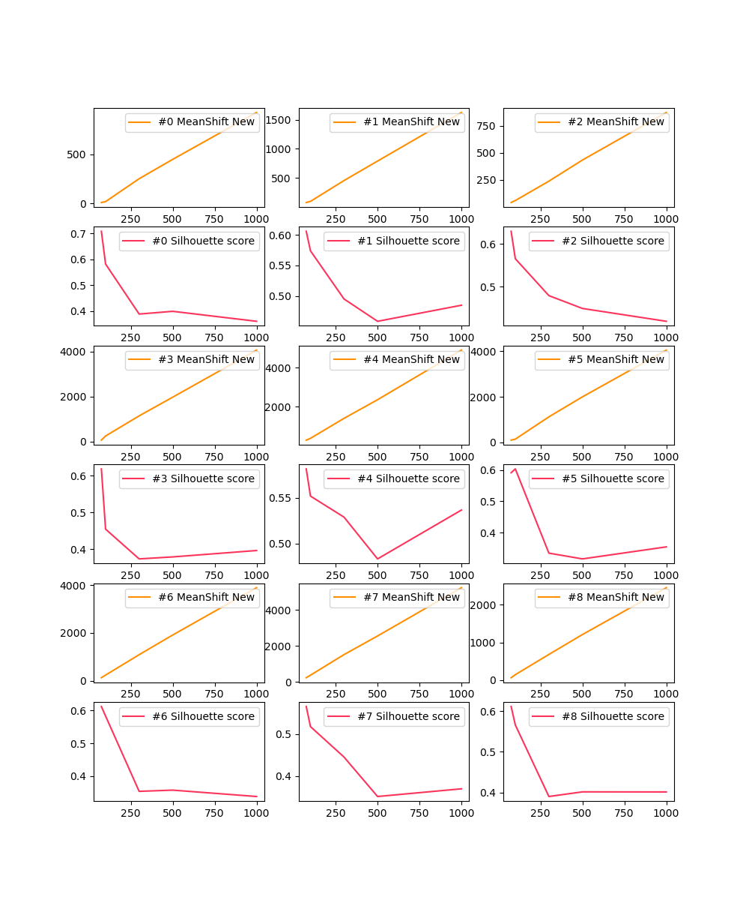
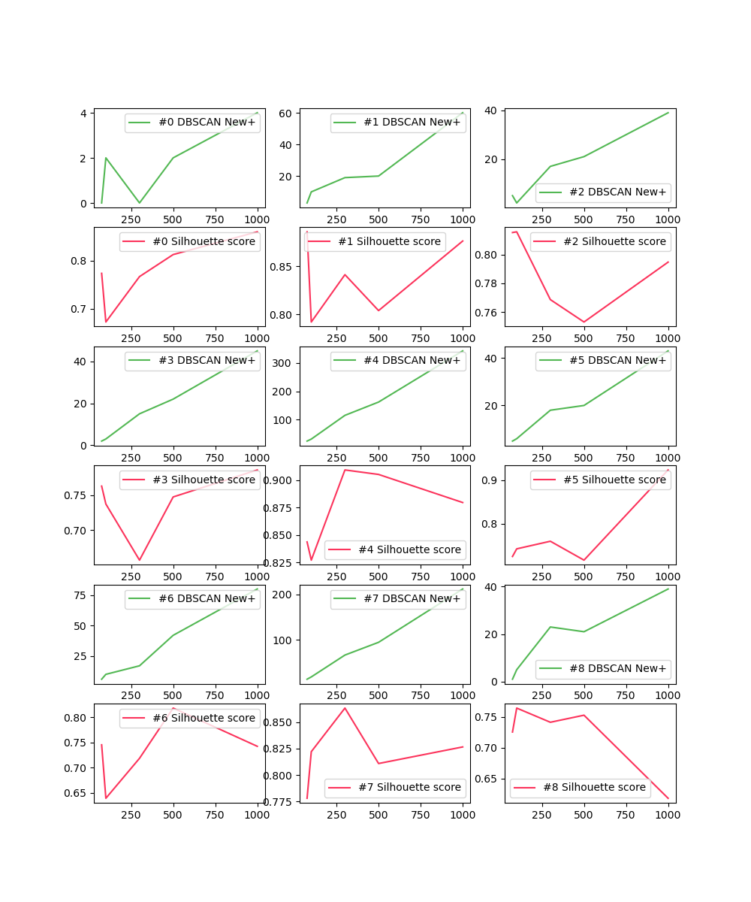
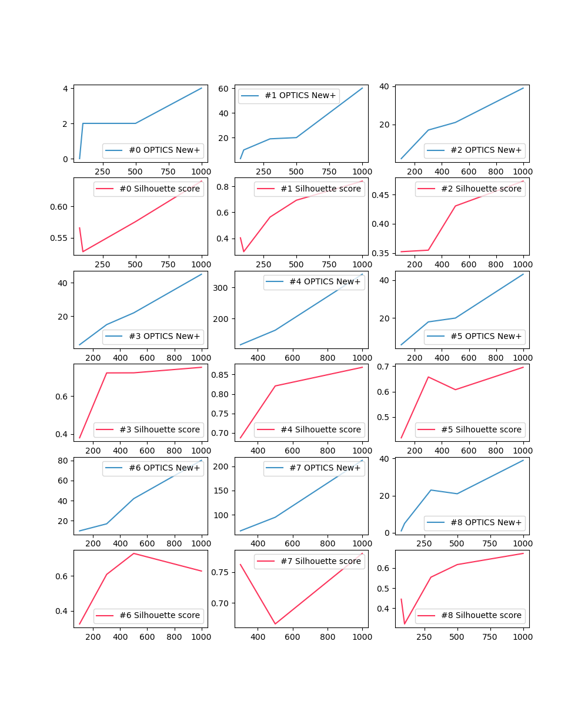
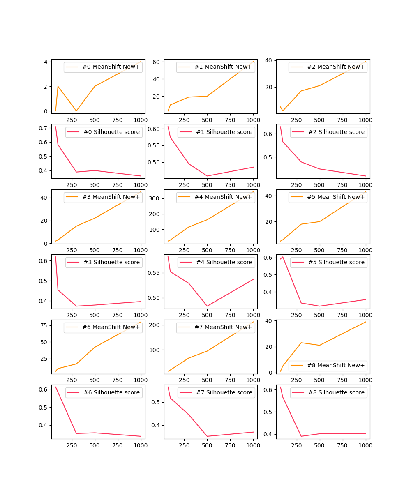
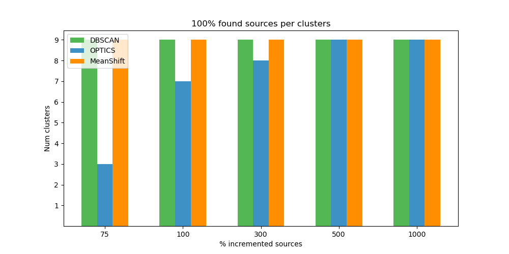

Cluster IDs
#0 Cluster: UBC8
#1 Cluster: UBC17_a
#2 Cluster: UBC17_b
#3 Cluster: UBC106
#4 Cluster: UBC186
#5 Cluster: UBC570
#6 Cluster: UBC1004
#7 Cluster: UBC1015
#8 Cluster: UBC1565
Hyper-params
DBSCAN: {'algorithm': 'auto', 'eps': 1.0, 'leaf_size': 30, 'metric': 'euclidean', 'metric_params': None, 'min_samples': 5, 'n_jobs': None, 'p': None}
OPTICS: {'algorithm': 'auto', 'cluster_method': 'xi', 'eps': None, 'leaf_size': 30, 'max_eps': inf, 'metric': 'minkowski', 'metric_params': None, 'min_cluster_size': 0.5, 'min_samples': 5, 'n_jobs': None, 'p': 2, 'predecessor_correction': True, 'xi': 0.05}
MeanShift: {'bandwidth': None, 'bin_seeding': False, 'cluster_all': True, 'max_iter': 300, 'min_bin_freq': 1, 'n_jobs': None, 'seeds': None}
New sources (100% original sources found)
DBSCAN

OPTICS

MeanShift

New+ sources (in range pmRA/pmDec, 100% original sources found)
DBSCAN

OPTICS

MeanShift

100% original sources found per algorithm
